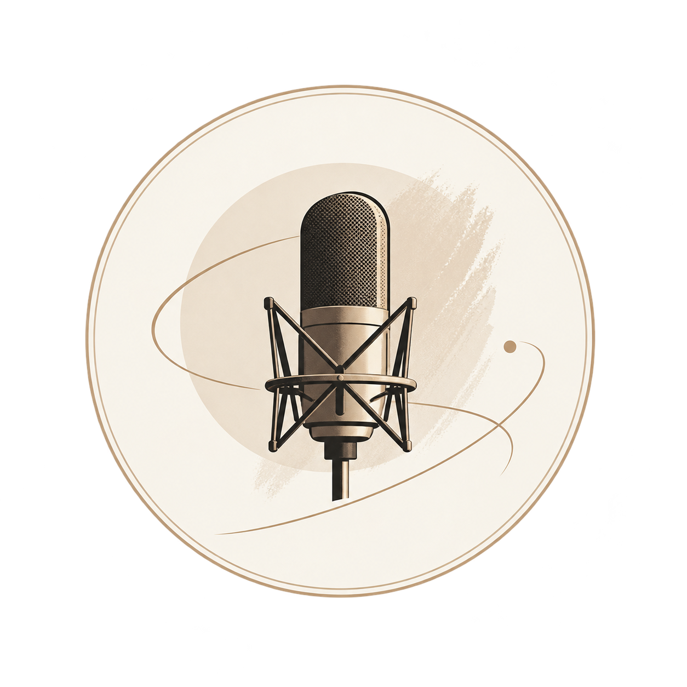

Über mich
01 / PROFILJahrgang
2001
Stimmalter
16–30 Jahre
Sprachen & Akzente
Deutsch, Englisch (fließend)
Typ & Stimmfarbe
Klar, jung, energetisch, emotional, wandelbar
Rollenprofil
Teenager, junge Erwachsene, gefühlvolle Charaktere, dynamische Typen
Seit 2021 kontinuierliches Training im Synchronsprechen sowie Workshops, Hospitationen und Ensemblerollen.
Seit 2024 regelmäßig in Synchronrollen zu hören, unter anderem in My Hero Academia und Blue Exorcist.
2026 Sprech- und Synchroncoaching bei Markus Hanse, inklusive professioneller Demoaufnahmen.
Sprachdemos
02 / HÖRPROBENDemo – Fassungslos
Demo – Teenie
Demo – Enttäuscht
Demo – Soldat
Demo – Werbung
Sprechrollen
03 / AUSWAHLTatsuma SuguroBlue Exorcist: The Blue Night Saga (2025)
CivilI May Be a Guild Receptionist, but I'll Solo Any Boss to Clock Out on Time (2025)
Zollbeamter BSpice and Wolf: Merchant Meets the Wise Wolf (2024)
Luke Seeker (17 Jahre)I'll Become a Villainess Who Goes Down in History (2024)
Großer MitschülerEverybody Still Hates Chris (2024)
RattaDungeon People (2024)
MegafanShikizakura (2024)
Dreiergespann CBofuri: I Don't Want to Get Hurt, so I'll Max Out My Defense (2024)
Kashiko KashiMy Hero Academia (2024)
Heteromorph AMy Hero Academia (2024)
RäuchertellerOddballs: Die seltsamen Abenteuer von James & Max (2022)
Kontakt
04 / ANFRAGENDu hast ein Projekt im Kopf?
Für Anfragen und Zusammenarbeit erreichst du mich per E-Mail.